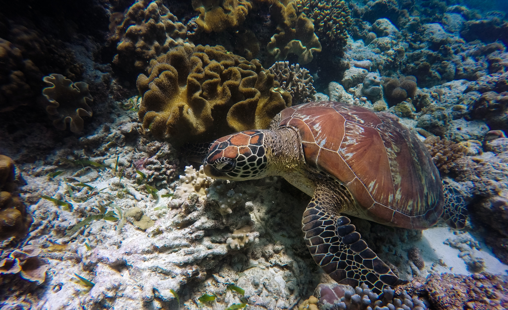

History of the hatchery
The Kosgoda Turtle Hatchery, which Dudley Perera founded in 1981, has emerged as a ray of hope for the preservation of turtle species that are in risk of extinction. Dudley is highly motivated and enthused about his cause, and he has training in marine animal protection. He enjoys imparting his knowledge to both residents and visitors. This hatchery, which is situated along Kosgoda's stunning coastline, has been essential in safeguarding and sustaining the turtle species' breeding grounds. Over the years, the committed staff at the Kosgoda Turtle Hatchery has worked diligently to rescue and treat sick turtles, gather and protect eggs, and release hatchlings back into the environment. Their hard efforts have not only increased turtle numbers but also increased villagers' and visitors' understanding of the need of marine conservation.

Turtle species in the hatchery
The Loggerhead, Hawksbill, Olive Ridley, Leatherback, and Green turtles—all of which are either critically endangered or endangered species—are among the five of the seven kinds of sea turtles that call the Kosgoda Turtle Hatchery home. Each type of turtle is given individualized care and attention at the Kosgoda Turtle Hatchery to ensure their survival and help preserve these incredible creatures for future generations.

Volunteer programs
Through its volunteer programmes, the Kosgoda Turtle Hatchery provides enthusiastic individuals with a fantastic opportunity to support turtle conservation. You may actively take part in several activities that promote the welfare and conservation of endangered turtles as a volunteer at the hatchery. Your participation will have a significant influence on conservation efforts, from monitoring and safeguarding nesting places to helping with the treatment and rehabilitation of wounded turtles. The program's other crucial components include habitat preservation, visitor education, and community engagement activities. You may learn more about turtle conservation firsthand by joining as a volunteer, and you'll also join a committed team that is striving to achieve a common objective. Your support and dedication will be crucial in preserving these wonderful animals and their natural habitats.